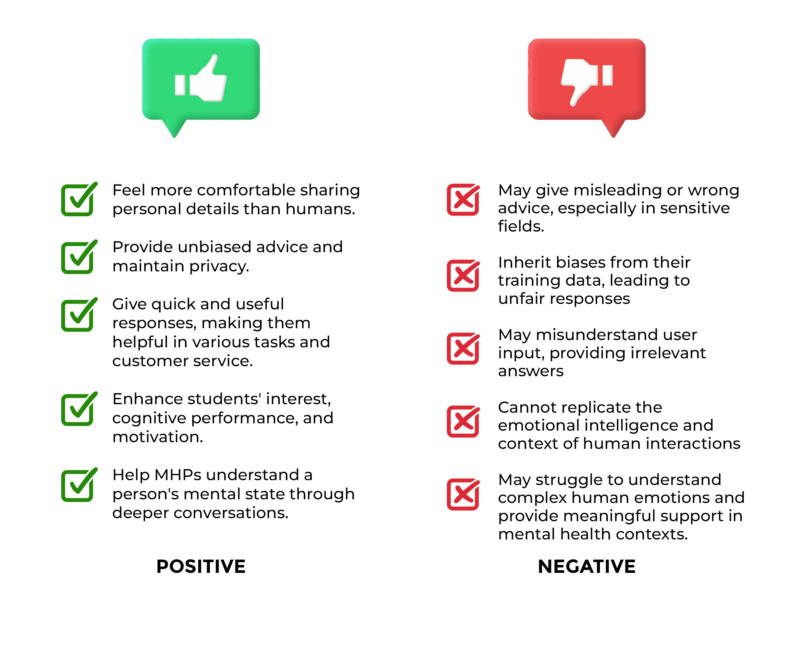

Disruptive technologies are innovations capable of transforming existing industries and established workflows. These technologies introduce new features or methods that are capable of outperforming existing solutions, if widely adopted. Inventions like electricity, the Internet, and–most recently–Artificial Intelligence (AI) are examples of disruptive technologies. History has proven that disruptions are not always negative but will this be the case for AI ChatBots?
AI’s vast potential is apparent in its many forms: interactive AI (e.g. chatbots), functional AI (e.g. proofreading tools), visual AI (e.g. image recognition). These applications demonstrate AI’s transformative capabilities. As a disruptive technology, it replaces traditional and existing systems in business, healthcare, travel, and countless other industries.
AI chatbots simulate human conversations and, in professional assistive contexts, can be used from customer service rolls to mental health support. As defined by Oracle Cloud Infrastructure (OCI), AI is “a computer program that simulates and processes human conversation (either written or spoken, allowing humans to interact with digital devices as if they were communicating with a real person.” AI chatbots are capable of emulating human support and providing general health diagnostics. These chatbots used advanced algorithms such as deep learning to understand and respond to a user’s concerns and self-observations.
There are many factors that can impact a person’s mental health: emotional skills, substance abuse, poverty, and inequality (WHO, 2022). Mental illnesses can vary from different conditions in severity (NIH, n.d.) and impact a person’s well-being and quality of life.
A recent large-scale study co-led by Harvard Medical School and University of Queensland predict that by the age of 75 years old, one in two individuals will develop at least one mental health disorder (McGraft et al., 2023). In the same study, it was found that depressive disorders were still the most prevalent among their respondents alongside alcohol use disorder (McGraft et al., 2023). To make matters worse, according to the World Health Organization (WHO), over 150 million people in the European Region are currently living with a mental health condition. The COVID-19 pandemic has further exacerbated this crisis, limiting access to services and increasing stress levels.
Traditional mental health providers have embraced online platforms to increase accessibility. A few examples include:
BetterHelp
Offers online therapy with licensed counselors via video calls, messaging, and live chats.
Talkspace
Provides therapy sessions tailored to individual needs, including specialized programs for couples or teens.
Cerebral
Focuses on mental health treatment with a subscription-based model that combines therapy and medication management.
Role of AI in Bridging Mental Health Support Gaps
Recent advancements in AI technology have significantly enhanced mental health services by addressing challenges like affordability, accessibility, and availability. AI-powered tools can analyze user input to provide personalized insights, suggest coping mechanisms, or connect users to appropriate professionals.
AI automation extends to customer support for mental health services. These systems streamline appointment scheduling, answer frequently asked questions, and ensure seamless communication between users and mental health providers.
By integrating traditional and AI-driven approaches, the mental health sector will be able to deliver more inclusive, accessible, and effective care. AI companions like Character AI and Replika can provide conversational support, but they lack the depth and expertise of a trained therapist. Despite these limitations, AI-powered tools are ever-developing:
According to a study published in the National Institutes of Health's National Library of Medicine (NLM), there's a growing need for specialized support for young people experiencing depression and anxiety. Notably, a 2-week intervention using a chatbot demonstrated effectiveness in reducing these symptoms, compared to a control group receiving self-help materials.
AI chatbots such as
Woebot,
Youper,
Wysa,
and
Marlee
are rising in popularity due to their ability to simulate empathetic conversations. By employing techniques such as CBT, chatbots are able to help users manage stressors in real-time with guided self-help tools, immediate availability, privacy, and anonymity which are often points of worry and stigmatized.
However, AI chatbots like these still need to be further researched on the efficacy of agent-guided CBT outside of English, particularly in nuanced languages wherein words change depending on sentence structure. This finding underscores the importance of language-specific considerations when developing and evaluating AI-powered mental health interventions.
Case Studies and Testimonies
Mental Health Needs
Adequate response to the mental health burden is scarce (WHO, 2021). In low to middle income countries, 76%-85% of people with severe mental disorders received no treatment. Even the small fraction of people with access to mental health care potentially receives poor quality care according to WHO Mental Health Atlas 2011 due to scarcity and inequitable distribution of resources.
More significantly, there is a huge insufficiency of mental health workers, especially in low to middle income countries. In half of the world’s population, there is only an average of one psychiatrist for every 200,000 people, and there are even less personnels trained to provide psychosocial interventions (Tahira, 2024).
User Experience
Mental health has been long stigmatized not only because of societal preconceptions, but also due to inaccessibility in terms of financial availability. The sudden prevalence of AI technologies led to the integration of AI chatbots in numerous softwares, applications, and even websites to improve user experience and faster chat response time.
AI chatbots may encourage deep self-disclosure for individuals who may hesitate to share intimate details about themselves. A study conducted by Lee et al. (2020) suggests that AI chatbots may be able to help mental health professionals (MHP) to understand people’s mental status through deeper self-disclosure, and to establish a deeper trust between the MHP and the subjects. This was possible due to the capability of conversational agents (CA) in satisfying the emotional needs of students. The results of a study conducted by Kim et al. (n.d.) noted that CAs are attentive listeners due to their lack of emotions, protect private information, and give unbiased advice based on the provided data.
Apart from this, AI chatbots provide effective assistance to specific needs of various demographics, as they provide quick and useful responses. The technology optimizes workload, and facilitates tasks that would otherwise require human intervention (Følstad & Brandtzaeg, 2020). Such efficiency for users is beneficial in many aspects, including customer service and general contexts. With this efficiency in mind, AI chatbot capabilities can be improved in numerous aspects, such as learning engagement among students. New and efficient technologies like AI chatbots have influenced students’ interests and learning capability, indicating that AI chatbots can serve as effective tools in enhancing learning engagement (Lee et al., 2022). Alongside that, numerous students utilize AI chatbots for thinking development, knowledge acquisition, and motivation enhancement—AI chatbots provide support to students academically, optimizing learning and positively impacting cognitive performance (Ma et al., 2024).
Nonetheless, poor data produces a poor AI model. If an AI chatbot’s model is not trained properly and well, AI chatbots can perpetuate biases present in their training data. This remains a constant challenge for many generative AI models (Niloy et al., 2024). In lieu of such concerns with AI chatbots, they can also provide inaccurate or misleading information, which can be a concern for information-sensitive workfields (Perrone, 2024).
Furthermore, AI chatbots are prone to misinterpretation of prompts; users may receive irrelevant responses that deviate from their expectations (Følstad & Brandtzaeg, 2020). Alongside that, AI chatbots can simulate conversation, but lack the depth and context in natural human interaction. Such limitations could pose challenges in context such as mental health support and emotional intelligence (Perrone, 2024). This proves a need to improve natural language processing (NLP) models and capabilities.

Disruptive Potential of AI Chatbots
Accessibility and Affordability
One way AI chatbots are disruptive is by breaking down barriers to accessibility. In a study by Devillers (2021), a significant development is the creation of "companion robots" (or chatbots) that assist patients with disabilities by providing therapy or tracking their health over time. These robots are especially helpful for individuals with conditions like Alzheimer's or other brain diseases, as they can offer care 24/7 with patience and without tiring. Additionally, traditional therapy and medical consultations are often expensive, time-consuming, or hard to access due to location. AI chatbots, however, provide quick, 24/7 assistance at a much lower cost, making it easier for more people to receive mental health and medical advice. This change enables more people to get the help they need without the usual barriers of time or cost.
The state of mental healthcare as often expensive or inaccessible, especially to minorities, is recognizable. Habicht, et al. (2024) conducted a study to prove the potential of digital tools, “personalized artificial intelligence-enabled self-referral chatbot”, in bridging the accessibility gap of mental healthcare. The study found a significant increase (15%) in referrals was found, particularly in minority groups such as nonbinary (179%) and ethnic (29%) individuals. The study reported that the patients' recognition of needing help and the chatbot's human-free nature were the drivers for encouraging more diverse groups, based on qualitative feedback from 42,332 individuals (Habicht, et al., 2024).
Emotional and Behavioral Impact
In a study titled "An Overview of Chatbot-Based Mobile Mental Health Apps: Insights From App Descriptions and User Reviews" by Haque et al. (2023), the results of their study conclude that people liked chatting with bots because they felt personal and friendly. Since bots are always available, some people might start relying on them more than talking to friends and family. The bots created a safe space where people felt comfortable sharing personal or sensitive information without being judged. Mental health is often stigmatized, making people hesitant to seek help. Chatbots offer a safe, anonymous space for users to share their feelings without judgment.
According to a study published in JMIR Mental Health (Forbat et al., 2017), a conversational agent named Woebot was designed to deliver basic CBT principles through brief, daily interactions within a messaging app. Each interaction began by assessing mood and context, then presented core CBT concepts through videos or interactive exercises. Woebot employed a decision-tree framework to guide conversations, with predetermined responses and limited natural language processing for user input.
In need of an active listener to have emotional conversations, AI chatbots is an option to consider. SimSimi is a widely used open-domain social chatbot. It differs from other notable chatbots (Woebot, Youper, etc.) as it is not intentionally designed to support mental health conditions, but rather to flexibly discuss anything. In a study by Chin, et al. (2023), they analyzed more than 150,000 conversation utterances in SimSimi, with specified key words such as “depressed” and “sad”. They aimed to identify how the AI chatbot facilitates sadness and depressive moods of the users and the cultural differences of expression of such emotion among Western (Canada, the United Kingdom, and the United States) and Eastern countries (Indonesia, India, Malaysia, the Philippines, and Thailand).
Among their findings, it was found that 18.24% of the analyzed conversations of users regarded the chatbot as a social actor, empathizing with or comforting the chatbot. With the users feeling emotional support from the chatbot and identifying it as a virtual nonhuman partner, it allowed them to openly engage in emotional discourse and express sadness. This is further proven through a comparison of their findings with a previous study in 2017 that analyzed the public discussion of depression on Twitter (now known as “X”) where the researchers discovered the higher prevalence of conversations about sadness in chatbots (49.83%) than on Twitter (7.53%) (Chin, et al., 2023).
Students commonly face various stressors that can impact their mental health which may then also impact their academic performance. Abot is an AI chatbot designed to encourage students in lifestyle habits and well-being. A research by Sia, et al., (2021) involved 25 senior high school students using Abot for a week to investigate students’ acceptability and perceived effectiveness on their well-being. The evaluation based on the average scores using a 4-point Likert scale were 3.35 on performance, 3.36 on humanity, and 3.68 on affect, contributing to the potential of AI chatbots as tools to assist students in managing their mental health.
Risks
It is important to note that although AI chatbots may help monitor and pose as a guide to one’s self-management of their mental health, it is unable to replace human mental health professionals and their services. This notion is, according to Khawaja and Bélisle-Pipon (2023), is a “kind of therapeutic misconception” where being unaware of or confusing the role of these chatbots may imply an individual underestimating the restrictions and limitations of AI chatbots while overestimating its ability to provide therapeutic support and guidance. These misconceptions may be formed due to “inaccurate marketing of such chatbots, forming a digital therapeutic alliance with these chatbots, inadequate design of the chatbots leading to biases, and potentially limiting one's autonomy” (Khawaja and Bélisle-Pipon, 2023).
The manner of communication with an AI chatbot is mainly performed through an exchange of texts, a conversation. However, AI chatbots are nonhuman and so, are unable to develop the same meaningful therapeutic alliance as human mental health professionals can with their patients. It may feel as if there is a connection of sorts between user and chatbot, similar to a study found in which users described their experience with Woebot, stating they thought of the chatbot showing concern for them (Khawaja & Bélisle-Pipon, 2023; Darcy, et al., 2021). But it is misleading as users may believe this bond is real.
It risks therapeutic misconception as they may trust the chatbot with their sensitive information and therapeutic services without human intervention (Khawaja & Bélisle-Pipon, 2023). With this risk, it can pose further risks in the long-term in providing ineffective and inaccurate advice or, in bleaker cases, negatively impacting a user’s mental health. Though applications or the chatbot itself may give reminders of or encourage its users to receive formal therapy, this effort may not be sufficient to avoid therapeutic misconception.
Limitations and Ethical Considerations
AI chatbots have experienced significant growth in various sectors, including customer service and mental health support. However, their rapid integration comes with fundamental limitations that need ethical considerations, particularly in addressing users' emotional and diagnostic needs.
Challenges in Diagnostics
AI chatbots take into account various data from across varying sources to make an informed decision. However, due to this, there is a likelihood that due to the vast database an AI chatbot has to sort through, it has the potential of making a misdiagnosis. In this case, it runs the risk of potentially making a diagnosis that is not well-accustomed to the beliefs of its users. For example, a user who grew up in a conservative family might get the wrong implications from the diagnosis of the AI chatbot who did not take into account the upbringing of its user.
The Absence of Human Empathy
AI chatbots lack the ability to perceive, interpret, and respond to complex emotions, making them unable to replicate genuine human interactions and to detect subtle, non-verbal cues. Their reliance on datasets and algorithms limits their capacity to build trust, de-escalate emotional situations, or provide effective psychotherapy as they cannot engage in discursive practices or guide users toward self-understanding (Sedlakova & Trachel, 2022). This empathy gap can delay users from seeking professional help, potentially worsening their condition. Additionally, anthropomorphism bias, wherein users mistakenly attribute human-like compassion to chatbots, raises ethical concerns. Halls (2023) highlights how human interaction, even a single meaningful connection daily, improves well-being—something that AI cannot replicate. Developers bear ethical responsibility to clarify AI’s limitations in emotional support, as misleading users may lead to misplaced trust and harm (AI & Society, 2020).
Data Privacy and Identity Theft Risks in AI Chatbots
In line with this, the issue of data privacy always comes up when dealing with AI chatbots. Usually, most applications or websites which use AI chatbots ask users to create an account with them. This runs the risk of individuals’ identity being stolen or otherwise used for other nefarious reasons. In 2023 for example, the Philippines saw a 13.9% increase in cyber-identity theft cases compared to 2022 (Tupas, 2024). This proves how easy it is for a person’s identity to be stolen, and this risk itself carries over in the use of chatbots. It is for this reason that it is essential for applications and websites which use AI chatbots to have transparency to their users with regards to how they use the user’s information.
Conclusion
AI, as innovative and as helpful in bridging gaps in emotional and diagnostic support, and accessibility, still has limitations and room for improvement much like other new and developing technologies.
The lack of human empathy and understanding of nuance poses a significant drawback in handling emotionally sensitive situations and diagnostics. As AI’s development continues, it becomes essential to address its limitations through ethical design and clearer parameters. This approach ensures that chatbot usage can meaningfully enhance, rather than undermine, mental health support as an auxiliary tool to human solutions.
Until this becomes a standard rather than a possibility, human intervention and further research is necessary.